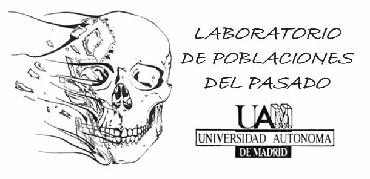

Exploración
anatómica
Navega por el esqueleto humano e identifica las piezas clave de nuestra colección.

Navega por el esqueleto humano e identifica las piezas clave de nuestra colección.
Accede directamente a los especímenes clasificados por tipo de enfermedad ósea.
Conceptos, recursos didácticos, bibliografía y actividades para aprender paleopatología.
> Zona de aprendizajeNoticias, publicaciones y novedades del proyecto y del equipo de investigación.
> Ver todas las noticiasNavega el esqueleto humano por regiones. Accede a las patologías documentadas en cada estructura ósea.
ExplorarClasificación sistemática de patologías óseas: traumáticas, infecciosas, degenerativas, metabólicas y más.
ExplorarAcceso al repositorio de piezas osteológicas del Departamento de Antropología de la UAM con fichas científicas.
Ver colecciónRecursos didácticos, conceptos básicos, materiales de estudio, bibliografía especializada y actividades educativas.
AccederNoticias, publicaciones científicas, novedades del proyecto y eventos académicos relacionados con la paleopatología.
Ver noticiasLa navegación principal del museo se organiza por regiones del esqueleto humano. Selecciona una región para acceder al catálogo de patologías documentadas en esa zona.
Neurocráneo, viscerocráneo, mandíbula y estructuras faciales. Patologías traumáticas, infecciosas y trepanaciones.
Columna vertebral, costillas, esternón y pelvis. Patologías degenerativas, infecciosas y traumáticas de alta prevalencia.
Húmero, radio, cúbito, carpo y mano. Fracturas consolidadas, patologías degenerativas y marcadores de actividad.
Fémur, tibia, peroné, tarso y pie. Patologías metabólicas, traumáticas y marcadores de movilidad y estrés biomecánico.
Clasificación sistemática de las patologías óseas documentadas en la colección. Cada categoría reúne casos registrados con criterios diagnósticos y contexto bioarqueológico.
Fracturas, luxaciones y lesiones perimortem o antemortem. Indicadores de violencia interpersonal y accidentes.
Osteomielitis, tuberculosis, brucelosis y otras enfermedades infecciosas con expresión ósea documentable.
Artrosis, espondiloartrosis y cambios óseos asociados al desgaste articular y al envejecimiento del individuo.
Hiperostosis porótica, criba orbitalia, escorbuto y raquitismo. Indicadores de déficits nutricionales y estrés fisiológico.
Tumores óseos primarios y metastásicos. Presencia de osteomas, lesiones líticas y otras neoplasias con registro esquelético.
Caries, periodontitis, anomalías de desarrollo y alteraciones congénitas en el esqueleto axial y apendicular.
El Departamento de Antropología Física de la Universidad Autónoma de Madrid custodia una de las colecciones osteológicas de referencia en el ámbito académico español.
Esta colección reúne piezas procedentes de excavaciones arqueológicas, fondos históricos y material de estudio comparativo, con especial atención a los contextos medievales e hispanoamericanos. Su valor científico reside tanto en la excepcionalidad de algunas piezas como en la representatividad estadística del conjunto, que permite estudios poblacionales, análisis de paleodieta y reconstrucción de condiciones de vida pasadas.
Integración de modelos 3D interactivos y fichas de catalogación científica
Espacio educativo integrado en el museo. Conceptos, recursos y materiales para el aprendizaje de la paleopatología y la osteología desde una perspectiva académica.
Introducción a la paleopatología, metodología de análisis esquelético y principales conceptos de osteología forense y arqueológica.
Ir al módulo →Atlas digital del esqueleto humano con denominación anatómica, variaciones morfológicas y referencias bibliográficas actualizadas.
Ir al módulo →Materiales descargables, presentaciones, fichas de trabajo y guías de práctica para el análisis de material osteológico.
Ir al módulo →Compilación de referencias esenciales en paleopatología, bioarqueología y osteología humana, con acceso a textos digitalizados cuando sea posible.
Ir al módulo →Actividades interactivas para evaluar y consolidar el aprendizaje de diagnóstico diferencial y reconocimiento de patologías.
En desarrollo →El equipo del Departamento de Antropología Física de la UAM presenta los resultados del análisis paleopatológico de los restos documentados durante las campañas de 2023–2024.
Leer más →Incorporación de modelos fotogramétricos de alta resolución de piezas con patologías infecciosas y degenerativas.
Leer más →Disponibles en el Aula Virtual los vídeos y materiales de las jornadas celebradas en la Facultad de Filosofía y Letras.
Leer más →Descarga disponible en el módulo de Bibliografía del Aula Virtual. Autoría del grupo de investigación de Bioarqueología UAM.
Leer más →